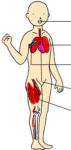
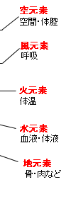
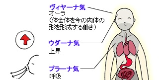
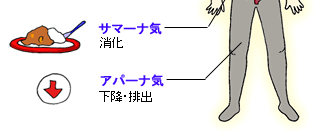

◆わたしたちの身体を構成する五つのエレメント
わたしたちの身体を構成しているものといえば、まず骨、筋肉、血液などを挙げることができる。これらの要素を、地・水・火・風・空の五つに分類したものを「五大エレメント」という。
わたしたちの身体を構成する五大エレメントには、粗雑なものと微細なものの二種類がある。
粗雑な五大エレメントについては、地は固体成分、水は液体成分、火は体温を形成するもの、風は呼吸、空は空間を指している。
|
●微細な五大エレメント
|
●粗雑な五大エレメント
|
|
空元素 純粋な光 |
  |
|
|
風元素 核融合 |
||
|
火元素 炎・プラズマ |
||
|
水元素 液体 |
||
|
地元素 固体 |
  |
| ◎五大エレメント では、次に人間を構成するものに入っていこう。人間を構成するものにおいて、まず知っておかなければならないのは五大エレメントである。 この五大エレメントとは何かというと、地（ち）・水（すい）・火（か）・風（ふう）・空（くう）を指す。まずこれには粗雑な地・水・火・風・空と微細な地・水・火・風・空が存在している。
◎地元素 ◎水元素 ◎火元素 ◎風元素 ◎空元素 ◎微細な五大エレメント ◎五種の気 ◎アパーナ気 ◎サマーナ気 ◎プラーナ気 ◎ウダーナ気 ◎ヴィヤーナ気 |
◆微細な五大エレメントはエネルギーの昇華を表わす
一方微細な五大エレメントは、エネルギーが低い次元から高い次元へと昇華するプロセスを表わしている。
つまり、固体（地）を加熱するとドロドロの液体（水）になり、それをさらに加熱すると炎となってプラズマ化する（火）。さらにエネルギーを加えると核融合を起こし（風）、さらにエネルギーを加えると純粋な光（空）へと昇華していくのだ。
◆修行が進むとトイレに行く回数も減る！――五種の気とその働き
五大エレメントとは別に、わたしたちの身体を構成する要素として「五種の気」がある。人間の身体は、この五種類の気によって動いているのだ。
アパーナ気は物質を下に引き下げる働きを持っているため、わたしたちの意識をも下向させる働きがある。そのため、修行を進めるにはアパーナ気を上昇させる必要がある。例えば、修行者の座法として蓮華座があるが、この座法を組む目的の一つは、アパーナ気が下がらないようにするためだ。
ちなみに、修行が進むとアパーナ気が下がりづらくなるので、必然的に排便や排尿の回数も減ってしまう。つまり、トイレに行く回数が少なくなるのだ。
反対に、ウダーナ気はものを上に引き上げる働きがある。だから、わたしたちがウダーナ気に集中すれば、意識を上に引き上げることができるのだ。